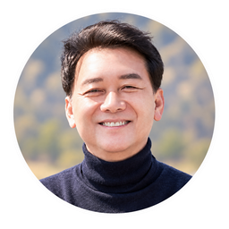
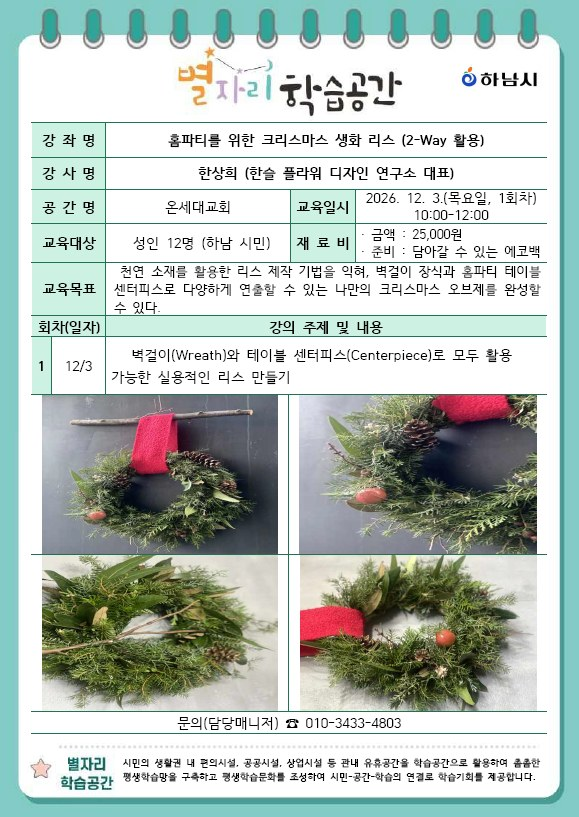
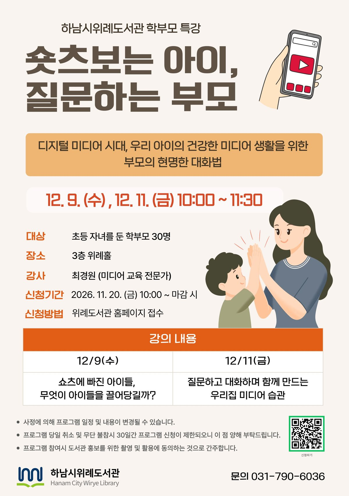
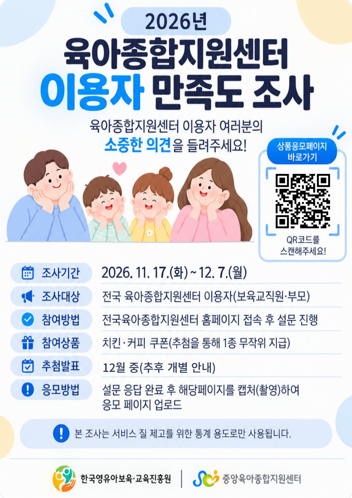
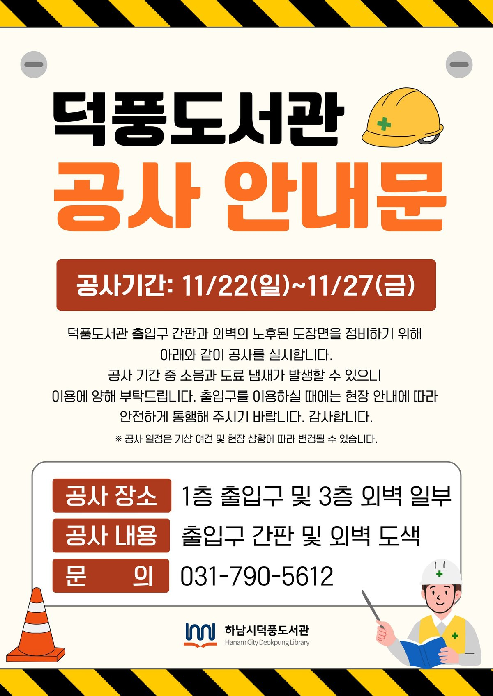

84호 | 2026년 11월 20일 발행
우하소 뉴스레터 목차
- 우리동네 국회의원 이광재
- 하남 지역 주요 뉴스
- 하남 맘카페 HOT 이슈
- 공공기관 소식지
- 하남 행사일정 '우하소' 달력

우리동네 국회의원 이광재현장일지
이광재의원, "820조 예산, 더 나은 답을 찾고 있습니다"
• 2027년도 예산 820조 원 심사, 어디에 어떻게 써야 국민 삶이 나아질지 고민
• 예결위 회의마다 뉴튼·아리스토텔레스·폰 노이만 이야기로 함께 생각할 화두 제시
• 중산층의 중요성, 게임이론 등 책과 여러 사람의 이야기에서 더 나은 답 모색
• 여야 생각은 달라도 국민 삶을 낫게 하려는 마음은 같다는 믿음, 이기는 논쟁보다 문제를 푸는 토론 강조
• "예산은 숫자가 아니라 국민의 삶", 더 듣고 배우며 삶에 도움 되는 예산 약속
• 예결위 회의마다 뉴튼·아리스토텔레스·폰 노이만 이야기로 함께 생각할 화두 제시
• 중산층의 중요성, 게임이론 등 책과 여러 사람의 이야기에서 더 나은 답 모색
• 여야 생각은 달라도 국민 삶을 낫게 하려는 마음은 같다는 믿음, 이기는 논쟁보다 문제를 푸는 토론 강조
• "예산은 숫자가 아니라 국민의 삶", 더 듣고 배우며 삶에 도움 되는 예산 약속
출처: 이광재 공식 네이버 블로그
언론보도
[방송기술저널] 이광재의원, "K-콘텐츠 무료 스트리밍(FAST)으로 세계 시장 넓힌다"… 정책토론회 공동 주최
이광재 국회 예산결산특별위원장과 이주희 의원(과학기술정보방송통신위원회)이 공동 주최하는 'K-FAST의 글로벌 경쟁력 강화를 위한 정책토론회'가 오늘(20일) 오후 2시 국회의원회관 제4간담회실에서 열립니다. FAST는 구독료 없이 광고를 보는 대신 스마트TV로 실시간 채널과 VOD를 무료로 보는 서비스로, 세계 시장이 2027년 120억 달러 규모로 커질 전망입니다. 토론회에서는 국내 스마트TV 플랫폼에 AI 더빙 등 기술을 더해 K-콘텐츠의 세계 유통망을 넓히는 전략을 논의합니다.
출처: 방송기술저널 (백선하 기자)
언론보도
[연합뉴스] 이광재의원, 예결위 제4차 예산안등조정소위원회 진행
이광재 국회 예산결산특별위원장이 19일 국회에서 열린 예산결산특별위원회 제4차 예산안등조정소위원회에서 잠시 생각에 잠긴 모습이 연합뉴스 카메라에 담겼습니다. 소위는 2027년도 정부 예산안의 증액과 감액을 여야가 조율하는 자리로, 나흘째 심사가 이어졌습니다. 정부 예산안의 법정 처리시한은 12월 2일입니다.
출처: 연합뉴스 (배재만 기자)
하남 지역 주요 뉴스
제9회 미사음악영화제 오늘 개막… AI 음악·영화·아트가 어우러진 융합 축제
음악과 영화에 인공지능(AI) 기술을 접목한 제9회 미사음악영화제가 20일 하남에서 막을 올립니다. 한국영화인총연합회 하남지부가 주최하고 하남시·하남시의회·하남미사 메가박스가 후원합니다. 올해는 AI 음악·영화·아트와 웹소설·웹툰, 1인 크리에이터로 분야를 넓혔고, 지난해 전석 매진된 'AI 특강'도 'AI 스페셜 특강'으로 키웠습니다. 오후 6시 20분 개막식을 시작으로 축하공연, AI 영화 초청작 상영과 관객과의 대화, AI 음악·아트 특별전, AI 패션쇼가 이어집니다.
출처: 경기신문 (김삼철 기자)
강성삼 경기도의원, "행정심판 처리 지연 심각… 도민 권익구제 위한 제도 개선 시급"
경기도의회 안전행정위원회 강성삼 의원(더불어민주당, 하남2)이 17일 경기도 기획조정실장 간담회에서 행정심판 처리 지연 문제를 지적했습니다. 올해 9월 말까지 접수된 2,155건 가운데 1,150건이 처리됐고, 평균 처리기간은 105.1일이었습니다. 법정 기간을 넘긴 사건은 756건(65.7%)으로 지난해 10.4%보다 크게 늘었습니다. 행정심판은 원칙적으로 60일 안에 결론을 내야 합니다. 강 의원은 사건은 늘어나는데 담당 정원은 줄었다며 전문인력 증원과 절차 개선을 촉구했습니다.
출처: 하남신문
하남교육지원청 2027년 9월 개청… 오지훈 도의원 "조직·인력 서둘러 구체화해야"
경기도의회 교육행정위원회 오지훈 의원(더불어민주당, 하남3)이 18일 경기도교육청 종합감사에서 2027년 9월 개청 예정인 하남교육지원청의 조직·인력 배치, 임시청사 확보, 업무 이관 일정을 서둘러 구체화하라고 주문했습니다. 오 의원은 하남교육지원청 신설이 빠르게 늘어나는 하남의 교육수요에 대응하는 전환점이라며, 개청 초기부터 안정적인 교육행정 서비스가 이뤄지도록 준비해야 한다고 강조했습니다. 3기 신도시 학교를 학생 수 변화에 맞춰 설계하도록 제도 개선도 건의해 달라고 했습니다.
출처: 하남 Times (박필기 기자)
하남 맘카페 HOT 이슈
이번 주 하남 지역 맘카페(미사맘스클럽, 아이품애·하남맘, 하남교산맘, 감일스윗시티)에서 많이 오르내린 HOT 이슈 TOP 3입니다.
1. [교육] "우선모집 광탈했어요"… 유치원 일반모집 앞두고 단설·병설 정보 찾기
현황: 2027학년도 유치원 우선모집 결과가 나온 뒤 미사맘스클럽에는 일반모집을 고민하는 글이 이어졌습니다. 미담·구산 단설유치원 우선모집에서 떨어졌다는 부모는 일반모집 인원이 7명, 9명뿐이라며 "이거 붙을수잇을까요"라고 걱정했고, 미사 랑·구산·달봄유치원의 분위기를 묻는 글도 올라왔습니다. 어린이집도 입학설명회 추첨에서 떨어져 세 번째 어린이집을 알아본다는 글, 5세반 정원이 1대 18이면 괜찮을지 묻는 글이 나왔습니다.
주민 포인트: 유치원 일반모집 일정과 모집 인원, 입학 요강은 유보통합포털(처음학교로)에서 확인할 수 있다는 답글이 많았습니다. 재원 중인 부모들은 구산유치원은 바로 옆 수영장을 교육과정에 활용하고, 미사 랑유치원은 학원가가 가깝다고 전했습니다. 일반모집 뒤에도 추가모집이 있을 수 있으니 원하는 유치원에 빈자리를 문의해 보세요.
주민 반응: "내년에 어린이집 보내기는 싫은데"라는 글처럼, 집 가까운 단설·병설유치원 자리가 부족하다며 마음 졸이는 부모가 많습니다.
출처: 네이버 카페 (미사강변도시 미사맘스클럽, 아이품애·하남맘)
2. [생활] "홈플주차장 폐쇄로…"… 옛 홈플러스 하남점 지하주차장 막혀 상가 이용 불편
현황: 지난 5월 문을 닫은 홈플러스 하남점이 1층 상가와 함께 쓰던 지하주차장(지하 3~6층)을 폐쇄해, 상가 손님과 상인들의 불편이 커졌다는 글이 올라왔습니다. 하남교산맘에는 "손님들의 발길이 뚝 끊기다 보니" 상인들의 한숨이 끊이지 않는다는 글이 공유됐습니다. 지역 언론은 상인들이 하남시에 중재를 요청했지만, 시는 시정명령만 할 수 있다는 입장이라고 전했습니다.
주민 포인트: 미사맘스클럽 회원은 건물 앞과 덕풍천 주변은 오전 11시~오후 3시 주차 단속이 없다고 들었고, 하남시청 주차장에 1시간 무료로 세우고 볼일을 봤다고 전했습니다. 단속 유예는 회원이 전해 들은 내용이라 바뀔 수 있으니, 가기 전 하남시 교통 안내를 확인하세요. 반찬가게·미용실·빵집 등 상가는 그대로 영업 중입니다.
주민 반응: "점심시간인데도 너무 한산하더라구요"라며 상가 사장님들을 걱정하고, 일부러 들러 장을 보자는 목소리가 나옵니다.
출처: 네이버 카페 (미사강변도시 미사맘스클럽, 하남교산맘)
3. [살림] "김장은 못해도 겉절인 했쥬"… 배추 한 통 2천 원대, 김장철 풍경
현황: 김장철을 맞아 아이품애·하남맘에는 김장 이야기가 줄을 이었습니다. 40kg 김장을 마쳤다는 글, 동 행정복지센터 김장 봉사를 하고 수육·겉절이로 점심을 먹었다는 글, 덕풍장에 들러 알배기 배추 3통을 사 겉절이를 했다는 글이 올라왔습니다. 마트 배추가 한 통 2천 원대라 겉절이·배춧국·배추전을 해 먹는다는 글도 보였고, 소화유치원 카페에는 아이들이 김장 체험으로 담근 김치를 집에서 맛있게 먹었다는 후기가 이어졌습니다.
주민 포인트: 배추·무 값은 마트와 전통시장마다 다르니 비교해 보고 사세요. 김장 뒤 나오는 배추 겉잎과 양념 찌꺼기는 물기를 꼭 짜서 음식물류 폐기물로 내놓으면 됩니다. 김장이 부담되는 집은 회원 글처럼 알배기 배추로 겉절이만 담가도 김장철 기분을 낼 수 있습니다.
주민 반응: 김장을 하는 집도, 겉절이로 대신하는 집도 "좀 맵다 매워"라며 김장철 분위기를 즐기는 모습입니다.
출처: 네이버 카페 (아이품애·하남맘, 하남시 소화유치원)
공공기관 소식지
2026년 11월 20일 기준 하남시 공공기관 주요 안내입니다.
하남시평생학습관 | 신청 11.23(월) 18시 마감
'별자리 학습공간' 12월 원데이클래스 학습자 모집 — 생화 리스·립밤·보석향기·강아지 아로마
"동네 가까운 공간에서 무료로 배우는 겨울 공예"
하남시평생학습관이 생활권 안 편의시설·공공시설·상업시설의 빈 공간을 배움터로 쓰는 '별자리 학습공간' 12월 원데이클래스 학습자를 모집합니다. 수강료는 무료이고 재료비만 냅니다.
강좌: 12.2(수) 11:00 겨울을 담은 보석향기 (청연교회, 재료비 1만 원) · 12.3(목) 10:00 크리스마스 생화 리스 (온세대교회, 2만5천 원) · 12.3(목) 10:00·11:00 천연 립밤 만들기 A·B (동부초등학교, 1만5천 원) · 12.9(수) 10:00 내 강아지를 위한 아로마 천연제품 (위드펫 공방, 2만 원)
대상: 성인 (하남시 거주·관내 재직자), 강좌별 선착순 6~12명, 1인 1강좌
신청: 11.16(월) 14:00 ~ 11.23(월) 18:00, 하남시 평생학습포털 온라인 (퀼트·코바늘 강좌는 정원이 차서 대기접수)
알아둘 점: 강의장 주차 공간이 좁으니 대중교통을 이용하세요
하남시평생학습관이 생활권 안 편의시설·공공시설·상업시설의 빈 공간을 배움터로 쓰는 '별자리 학습공간' 12월 원데이클래스 학습자를 모집합니다. 수강료는 무료이고 재료비만 냅니다.
강좌: 12.2(수) 11:00 겨울을 담은 보석향기 (청연교회, 재료비 1만 원) · 12.3(목) 10:00 크리스마스 생화 리스 (온세대교회, 2만5천 원) · 12.3(목) 10:00·11:00 천연 립밤 만들기 A·B (동부초등학교, 1만5천 원) · 12.9(수) 10:00 내 강아지를 위한 아로마 천연제품 (위드펫 공방, 2만 원)
대상: 성인 (하남시 거주·관내 재직자), 강좌별 선착순 6~12명, 1인 1강좌
신청: 11.16(월) 14:00 ~ 11.23(월) 18:00, 하남시 평생학습포털 온라인 (퀼트·코바늘 강좌는 정원이 차서 대기접수)
알아둘 점: 강의장 주차 공간이 좁으니 대중교통을 이용하세요

출처: 하남시 평생학습포털
위례도서관 | 신청 11.20(금) 10시부터
학부모 특강 '숏츠보는 아이, 질문하는 부모' — 초등 자녀를 둔 학부모 30명
"쇼츠에 빠진 아이, 혼내기보다 질문하고 대화하기"
디지털 미디어 시대에 아이의 건강한 미디어 생활을 위한 부모의 대화법을 배우는 2회 특강입니다. 1회차는 '쇼츠에 빠진 아이들, 무엇이 끌어당길까?', 2회차는 '질문하고 대화하며 함께 만드는 우리집 미디어 습관'을 다룹니다.
일시: 12월 9일(수)·11일(금) 10:00~11:30 (2회)
📍 장소: 위례도서관 3층 위례홀 (주차 1시간 무료)
대상: 초등 자녀를 둔 학부모 30명 · 강사 최경원(미디어 교육 전문가)
신청: 11월 20일(금) 10:00 ~ 12월 8일(화) 18:00, 위례도서관 홈페이지 (마감 시까지)
문의: 위례도서관 031-790-6036
디지털 미디어 시대에 아이의 건강한 미디어 생활을 위한 부모의 대화법을 배우는 2회 특강입니다. 1회차는 '쇼츠에 빠진 아이들, 무엇이 끌어당길까?', 2회차는 '질문하고 대화하며 함께 만드는 우리집 미디어 습관'을 다룹니다.
일시: 12월 9일(수)·11일(금) 10:00~11:30 (2회)
📍 장소: 위례도서관 3층 위례홀 (주차 1시간 무료)
대상: 초등 자녀를 둔 학부모 30명 · 강사 최경원(미디어 교육 전문가)
신청: 11월 20일(금) 10:00 ~ 12월 8일(화) 18:00, 위례도서관 홈페이지 (마감 시까지)
문의: 위례도서관 031-790-6036

출처: 하남시립 위례도서관
하남시육아종합지원센터 | 조사 12.7(월)까지
2026년 육아종합지원센터 이용자 만족도 조사 — 참여하면 치킨·커피 쿠폰 추첨
"육아종합지원센터 이용자 여러분의 소중한 의견을 들려주세요"
한국영유아보육·교육진흥원과 중앙육아종합지원센터가 전국 육아종합지원센터 이용자를 대상으로 만족도 조사를 합니다. 장난감도서관·놀이체험실·부모교육 등을 이용한 하남 부모님도 참여할 수 있습니다.
기간: 2026년 11월 17일(화) ~ 12월 7일(월)
대상: 전국 육아종합지원센터 이용자 (보육교직원·부모)
참여: 중앙육아종합지원센터 홈페이지 접속 후 설문 → 응답 완료 화면을 캡처해 응모 페이지에 올리기 (포스터 QR코드)
상품: 치킨·커피 쿠폰 중 1종 추첨, 12월 중 개별 안내
한국영유아보육·교육진흥원과 중앙육아종합지원센터가 전국 육아종합지원센터 이용자를 대상으로 만족도 조사를 합니다. 장난감도서관·놀이체험실·부모교육 등을 이용한 하남 부모님도 참여할 수 있습니다.
기간: 2026년 11월 17일(화) ~ 12월 7일(월)
대상: 전국 육아종합지원센터 이용자 (보육교직원·부모)
참여: 중앙육아종합지원센터 홈페이지 접속 후 설문 → 응답 완료 화면을 캡처해 응모 페이지에 올리기 (포스터 QR코드)
상품: 치킨·커피 쿠폰 중 1종 추첨, 12월 중 개별 안내

출처: 하남시육아종합지원센터
덕풍도서관 | 공사 11.22(일) ~ 11.27(금)
[안내] 덕풍도서관 1층 출입구·3층 외벽 도장 공사 — 출입 시 현장 안내 따라 주세요
"공사 기간 소음과 도료 냄새가 날 수 있어요"
덕풍도서관이 출입구 간판과 외벽의 낡은 도장면을 정비합니다. 공사 중 소음과 페인트 냄새가 날 수 있으니 이용에 양해를 부탁드리며, 출입구를 지날 때는 현장 안내에 따라 안전하게 통행해 주세요.
기간: 11월 22일(일) ~ 11월 27일(금) (날씨·현장 상황에 따라 바뀔 수 있음)
📍 장소: 덕풍도서관 1층 출입구 및 3층 외벽 일부
내용: 출입구 간판 및 외벽 도색
문의: 031-790-5612
덕풍도서관이 출입구 간판과 외벽의 낡은 도장면을 정비합니다. 공사 중 소음과 페인트 냄새가 날 수 있으니 이용에 양해를 부탁드리며, 출입구를 지날 때는 현장 안내에 따라 안전하게 통행해 주세요.
기간: 11월 22일(일) ~ 11월 27일(금) (날씨·현장 상황에 따라 바뀔 수 있음)
📍 장소: 덕풍도서관 1층 출입구 및 3층 외벽 일부
내용: 출입구 간판 및 외벽 도색
문의: 031-790-5612

출처: 하남시립 덕풍도서관
하남 행사일정 '우하소' 달력
행사 달력
일
월
화
수
목
금
토
달력을 불러오는 중입니다…
© 2026 우리동네 진짜일꾼 이광재